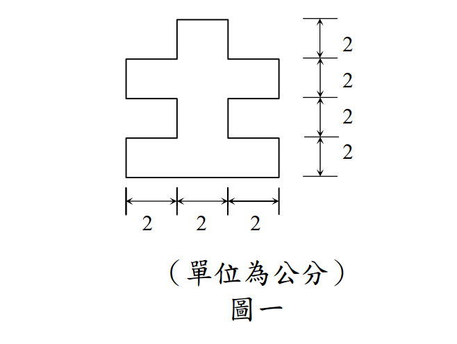
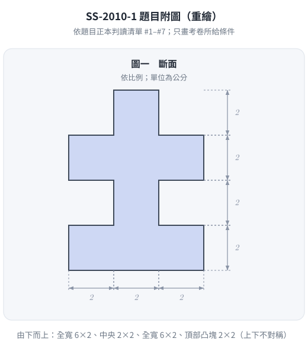

📄 題目正本：考卷原文・附圖・判讀清單（已確認）
SS-2010-1 題目正本
本檔只記錄考卷上寫了什麼、圖上畫了什麼，不含任何解法。解析見同資料夾
SS-2010-1.md。
判讀清單經使用者確認前，狀態為「待確認」；確認後本檔原則上不再修改（改動須回考卷原圖並記 log）。
| 項目 | 內容 |
|---|---|
| 考卷 | raw/exams/SS-2010_鋼結構設計.pdf 第 1（正面） 頁，第一題 |
| 考年 | 民國 99 年（2010） |
| 配分 | 20 分（10＋10） |
| 附圖 | 1 張（圖一，斷面），SS-2010-1-fig-1.png |
| 判讀狀態 | 已確認（2026-11-02 使用者確認，含「不確定」項之解讀；轉錄同日，PyMuPDF 110 dpi 全頁＋關鍵尺寸 220–400 dpi 局部目視，盲讀後才比對既有解析） |
1. 考卷原文（逐字）
一、有一斷面如圖一所示，使用 SS540 鋼料（降伏強度 $F_y = 4.0\ \textit{tf/cm}^2$），求此斷面強軸之：
㈠降伏力矩 $M_y$（tf-cm）。（10 分）
㈡塑性力矩 $M_p$（tf-cm）。（10 分）
2. 考卷給的公式、附表與參數
本卷卷首有「◎參考公式集（請自行使用適合之公式，並檢查其正確性，若有問題應自行修正）」，內容（照錄，與本題無直接關係）：
$$C_c = \sqrt{\frac{2\pi^2E}{F_y}},\quad F_a = \frac{12}{23}\times\frac{\pi^2E}{(k\ell/r)^2},\quad F_a = \frac{\left[1 - \dfrac{(k\ell/r)^2}{2C_c^2}\right]F_y}{\dfrac53 + \dfrac{3(k\ell/r)}{8C_c} - \dfrac{(k\ell/r)^3}{8C_c^3}}$$
$$\lambda_c = \left(\frac{k\ell}{r\pi}\right)\sqrt{\frac{F_y}{E}},\quad F_{cr} = \left[\exp(-0.419\lambda_c^2)\right]F_y,\quad F_{cr} = \left(\frac{0.877}{\lambda_c^2}\right)F_y$$
$$L_p = \frac{80 r_y}{\sqrt{F_{yf}}},\quad L_r = \frac{r_yX_1}{F_L}\sqrt{1+\sqrt{1+X_2F_L^2}},\quad C_b = 1.75 + 1.05\frac{M_1}{M_2} + 0.3\left(\frac{M_1}{M_2}\right)^2 \le 2.3$$
$$M_n = C_b\left[M_p - (M_p - M_r)\left(\frac{L_b - L_p}{L_r - L_p}\right)\right] \le M_p,\quad M_{cr} = \frac{C_bS_xX_1\sqrt2}{L_b/r_y}\sqrt{1 + \frac{X_1^2X_2}{2(L_b/r_y)^2}} \le M_p$$
注意：公式集出現 $M_p$，但沒有定義 $M_p$ 或 $M_y$ 的算法。
3. 附圖

圖面文字照錄：右側垂直尺寸 2、2、2、2；下方水平尺寸 2、2、2；（單位為公分）；圖一。
4. 判讀清單
「把握」標不確定者請優先確認；解讀類項目（題目用字的意思）另標「解讀」。
| # | 項目 | 判讀 | 圖上／題文依據 | 把握 |
|---|---|---|---|---|
| 1 | 水平分段 | 2-2-2，總寬 6 cm | 下方三段尺寸線 | 確定 |
| 2 | 垂直分段 | 2-2-2-2，總高 8 cm | 右側四段尺寸線 | 確定 |
| 3 | 由下而上第 1 層（0–2） | 全寬 6 × 2 | 圖形底部為最寬的矩形 | 確定 |
| 4 | 第 2 層（2–4） | 中央 2 × 2 | 窄頸，對齊水平尺寸中段 | 確定 |
| 5 | 第 3 層（4–6） | 全寬 6 × 2 | 第二個寬矩形 | 確定 |
| 6 | 第 4 層（6–8） | 頂部中央凸塊 2 × 2 | 最上方的小凸塊，對齊中段 | 確定 |
| 7 | 對稱性 | 左右對稱、上下不對稱（底部是全寬段，頂部是凸塊） | 圖形外框 | 確定 |
| 8 | 強軸 | 水平軸（$I_x$ 對水平軸較大） | 斷面高 8 > 寬 6（解讀，算得 $I_x > I_y$ 可驗證） | 確定 |
轉錄：2026-11-02（U2-1 題目／解答拆分試做）｜確認：2026-11-02 使用者確認
考題編號：SS-2010-1
主分類： SS-U2-1 塑性分析與設計
副分類： 無
設計法： 概念題（材料力學）
標籤： 斷面性質 降伏力矩 塑性力矩 十字形斷面 平行軸定理 塑性中性軸
1. 題目（考卷原文見題目正本）
考卷原文、公式／附表、附圖與判讀清單（已確認）見同資料夾
SS-2010-1-problem.md（題目瀏覽頁最上方「📄 題目正本」區塊）。本節只列解題時最容易讀錯的地方與本解使用的記號；題意以題目正本為準。

圖 1 題目附圖重繪（依題目正本判讀清單 #1–#7）。依比例畫出四層，底部是全寬段、頂部是凸塊，攔下「上下對稱十字形」的誤讀（ENA 與 PNA 因此不在同一處）。
常見誤讀
| 項目 | 正確判讀 | 常見誤讀 |
|---|---|---|
| 斷面形狀 | 由下而上：全寬 6×2、中央 2×2、全寬 6×2、頂部凸塊 2×2——上下不對稱 | 讀成上下對稱十字形（舊版解析得 $M_y = 106.7$、$M_p = 192$） |
| 強軸 | 水平軸（$I_x = 162.67 > I_y = 74.67$ cm⁴） | 以為寬 6 的方向是強軸 |
| ENA 與 PNA | ENA 距底 3.5 cm、PNA 距底 4.0 cm，兩者不同 | 用同一條軸算 $S$ 與 $Z$ |
本解記號： $y$ 自底面量起（cm）；$F_y = 4.0$ tf/cm²；參考公式集與本題無關。
2. 考題核心精神與出題者意圖 (Core Concepts & Examiner's Intent)
核心觀念：非對稱斷面的 $M_y$ 與 $M_p$——彈性中性軸 ≠ 塑性中性軸
本題刻意把斷面做成上下不對稱（下方兩塊寬段、上方一塊寬段＋凸塊），測驗：
- 形心（彈性中性軸 ENA）要先算：$\bar{y} = 3.5$ cm，不在幾何中心
- $S_x$ 取最外纖維較遠的一側：$c = \max(3.5,\ 4.5) = 4.5$ cm（頂部凸塊先降伏）
- 塑性中性軸（PNA）在面積等分處：$y = 4.0$ cm，與 ENA 不同
- $Z_x$ = 上下兩半對 PNA 的一次面積矩之和，上下兩半力臂不同，不能用「2 倍上半」
強軸判斷：$I_x = 162.7$ cm⁴ > $I_y = 74.7$ cm⁴，故強軸為水平軸（繞水平軸彎曲）。
3. 解題戰略地圖與陷阱分析 (Strategic Roadmap & Trap Analysis)
作戰計畫：
前置：依原圖分解四個矩形（由下而上 6×2、2×2、6×2、2×2），記錄 b、h、A、ȳi
Step 1 形心 ȳ = ΣAiȳi / ΣAi = 3.5 cm；c_top = 4.5、c_bot = 3.5 cm
Step 2 Ix = Σ(bh³/12 + Ai di²)
Step 3 Sx = Ix / c_max，My = Fy·Sx（頂部先降伏）
Step 4 PNA：由底部累積面積至 A/2 = 16 cm² → y = 4.0 cm
Step 5 Zx = Σ Ai |ȳi − y_PNA|（上下兩半分別計算）
Step 6 Mp = Fy·Zx；以力偶法驗算
陷阱分析：
| 陷阱 | 說明 | 對策 |
|---|---|---|
| ❶ 看錯斷面上下順序 | 底部是 6 cm 全寬段，頂部才有 2×2 凸塊；看成上下對稱十字形會得 $M_y = 106.7$、$M_p = 192$（舊解錯誤） | 依原圖由下而上逐格確認 |
| ❷ 以為形心在 4 cm | 上下不對稱 → $\bar{y} = 3.5$ cm | 一定先算形心 |
| ❸ $c$ 取錯側 | $S_x$ 要用離 ENA 較遠的頂部 $c = 4.5$ cm（$S_{\min}$） | $M_y$ 由先降伏的一側控制 |
| ❹ PNA 當成形心 | PNA 在面積等分處 $y = 4.0$ cm | ENA 與 PNA 分開算 |
| ❺ $Z_x$ 用「2 × 上半」 | 上下兩半一次面積矩不同（24 與 40） | 分別計算後相加 |
3.5 變數層次分析（Variable Hierarchy Analysis）
複習提示：解題後，在每個卡住的知識點「卡關?」欄標記
⚠；第二次複習時只看有⚠的項目。
最終目標： 不對稱斷面強軸降伏力矩 $M_y = 144.6$ tf-cm、塑性力矩 $M_p = 256$ tf-cm
主要公式（$\boxed{\phantom{x}}$ = 未知，待推導）
$$\boxed{\bar{y}} = \frac{\sum A_i \bar{y}_i}{\sum A_i}, \quad \boxed{I_x} = \sum\left(\frac{b_i h_i^3}{12} + A_i d_i^2\right)$$
$$\boxed{S_x} = \frac{\boxed{I_x}}{c_{\max}}, \quad \boxed{M_y} = F_y \cdot \boxed{S_x}$$
$$\boxed{Z_x} = \sum A_i\,|\bar{y}_i - y_{PNA}|, \quad \boxed{M_p} = F_y \cdot \boxed{Z_x}$$
L1：題目直接給定
| 符號 | 數值 | 說明 |
|---|---|---|
| 斷面形狀 | 由下而上 6×2、2×2、6×2、2×2 | 總高 8 cm，總寬 6 cm |
| $F_y$ | 4.0 tf/cm² | SS540 鋼料 |
L2：需知識點推導
| 符號 | 公式 / 來源 | 卡關? |
|---|---|---|
| $A$ | $12 + 4 + 12 + 4 = 32$ cm² | |
| $\bar{y}$ | $(12\times1 + 4\times3 + 12\times5 + 4\times7)/32 = 112/32 = 3.5$ cm | |
| $c_{\max}$ | $8 - 3.5 = 4.5$ cm（頂部） | |
| $I_x$ | $32/3 + 152 = 488/3 \approx 162.67$ cm⁴ | |
| $S_x$ | $162.67/4.5 = 36.15$ cm³ | |
| $M_y$ | $4.0 \times 36.15 = 144.6$ tf-cm | |
| $y_{PNA}$ | 底部累積 $12 + 4 = 16 = A/2$ → $y = 4.0$ cm | |
| $Z_x$ | 下半 40 ＋ 上半 24 ＝ 64 cm³ | |
| $M_p$ | $4.0 \times 64 = 256$ tf-cm |
L3：深層知識（不懂就卡住）
| 知識點 | 說明 | 卡關? |
|---|---|---|
| ENA 與 PNA 不同 | 非對稱斷面彈性中性軸過形心、塑性中性軸平分面積 | |
| $S_x$ 取 $S_{\min}$ | 降伏由離中性軸最遠的纖維開始 | |
| 平行軸定理 | $I = \sum(bh^3/12 + Ad^2)$，自身慣性矩不可漏 | |
| 形狀因子 | $f = Z_x/S_x = 1.77$，介於矩形 1.5 與菱形 2.0 之間 |
4. 步驟化詳細計算過程 (Step-by-Step Calculation)
斷面幾何分解
以斷面底部為原點，$y$ 軸向上：
| 構件 | $y$ 範圍（cm） | $b_i$ | $h_i$ | $A_i$（cm²） | $\bar{y}_i$（cm） |
|---|---|---|---|---|---|
| ① 下全寬段 | 0～2 | 6 | 2 | 12 | 1 |
| ② 中央段 | 2～4 | 2 | 2 | 4 | 3 |
| ③ 上全寬段 | 4～6 | 6 | 2 | 12 | 5 |
| ④ 頂部凸塊 | 6～8 | 2 | 2 | 4 | 7 |
$$A = 32\ \text{cm}^2,\qquad \bar{y} = \frac{12(1) + 4(3) + 12(5) + 4(7)}{32} = \frac{112}{32} = 3.5\ \text{cm}$$
一、降伏力矩 $M_y$
Step 1：$I_x$（平行軸定理，$d_i = \bar{y}_i - 3.5$）
| 構件 | $b_i h_i^3/12$（cm⁴） | $d_i$（cm） | $A_i d_i^2$（cm⁴） | $I_{x,i}$（cm⁴） |
|---|---|---|---|---|
| ① | $6\times8/12 = 4$ | $-2.5$ | $12 \times 6.25 = 75$ | 79.00 |
| ② | $2\times8/12 = 1.333$ | $-0.5$ | $4 \times 0.25 = 1$ | 2.33 |
| ③ | 4 | $+1.5$ | $12 \times 2.25 = 27$ | 31.00 |
| ④ | 1.333 | $+3.5$ | $4 \times 12.25 = 49$ | 50.33 |
$$I_x = \frac{32}{3} + 152 = \frac{488}{3} \approx 162.67\ \text{cm}^4$$
（$I_y = 2\times\dfrac{2\times6^3}{12} + 2\times\dfrac{2\times2^3}{12} = 72 + 2.67 = 74.67$ cm⁴ < $I_x$，確認水平軸為強軸）
Step 2：$S_x$ 與 $M_y$
$$c_{top} = 8 - 3.5 = 4.5\ \text{cm} > c_{bot} = 3.5\ \text{cm} \Rightarrow S_x = \frac{162.67}{4.5} = 36.15\ \text{cm}^3$$
$$\boxed{M_y = F_y S_x = 4.0 \times 36.15 = 144.6\ \text{tf-cm}}$$
（頂部凸塊外緣先達 $F_y$；此時底緣應力 $= 4.0 \times 3.5/4.5 = 3.11$ tf/cm²）
二、塑性力矩 $M_p$
Step 3：PNA
$A/2 = 16$ cm²；由底部累積：① 12 → ①＋② 16 → $y_{PNA} = 4.0$ cm（恰在②、③交界）
Step 4：$Z_x$
| 構件 | $A_i$ | $|\bar{y}_i - 4|$ | $A_i e_i$（cm³） |
|---|---|---|---|
| ① | 12 | 3 | 36 |
| ② | 4 | 1 | 4 |
| ③ | 12 | 1 | 12 |
| ④ | 4 | 3 | 12 |
$$Z_x = (36 + 4) + (12 + 12) = 40 + 24 = 64\ \text{cm}^3$$
$$\boxed{M_p = F_y Z_x = 4.0 \times 64 = 256\ \text{tf-cm}}$$
Step 5：雙路徑驗算
- 力偶法：$C = T = F_y \cdot A/2 = 4.0 \times 16 = 64$ tf；上半形心距 PNA $24/16 = 1.5$ cm、下半 $40/16 = 2.5$ cm → 力臂 4.0 cm → $M_p = 64 \times 4.0 = 256$ tf-cm ✓
- $I_x$ 對底邊再移軸：$I_{base} = 16 + 37.33 + 304 + 197.33 = 554.67$；$I_x = 554.67 - 32 \times 3.5^2 = 162.67$ cm⁴ ✓
形狀因子 $f = Z_x/S_x = 64/36.15 = 1.77$。
5. 結果彙整與驗算 (Summary & Verification)
| 項目 | 結果 |
|---|---|
| 全斷面積 $A$ | 32 cm² |
| 形心（ENA）距底 | 3.5 cm |
| 強軸慣性矩 $I_x$ | 162.67 cm⁴ |
| 斷面模數 $S_x$（頂部） | 36.15 cm³ |
| 降伏力矩 $M_y$ | 144.6 tf-cm |
| PNA 距底 | 4.0 cm |
| 塑性斷面模數 $Z_x$ | 64 cm³ |
| 塑性力矩 $M_p$ | 256 tf-cm |
| 形狀因子 | 1.77 |
觀念精析： 舊版解答把斷面讀成上下對稱十字形（底部也是 2×2 凸塊），得 $M_y = 106.7$、$M_p = 192$ tf-cm、$f = 1.80$。原圖底部是 6 cm 全寬段，斷面上下不對稱，ENA（3.5 cm）與 PNA（4.0 cm）分開，這正是本題的考點。
6. 依最新規範（AISC 360-16／-22）對照
本題為斷面性質計算，$M_y = F_y S_x$、$M_p = F_y Z_x$ 之定義新舊規範相同；AISC 360 F 章對結實斷面 $M_n = M_p$，並無改變本題答案。
修正日期：2026-11-01（依考卷原圖 400 dpi：斷面由下而上為 6×2 全寬、2×2、6×2 全寬、2×2 頂部凸塊，上下不對稱；原解誤讀為上下對稱十字形。形心 3.5 cm、PNA 4.0 cm，$M_y$ 由 106.7 更正為 144.6 tf-cm、$M_p$ 由 192 更正為 256 tf-cm（形狀因子 1.80 → 1.77）；新增力偶法與移軸雙路徑驗算）
驗證狀態：unverified
修正日期：2026-11-02（§1 全文重述改為指向題目正本 SS-2010-1-problem.md（已確認）＋常見誤讀＋本解記號，避免題意兩份不同步；解題內容與答案不變）
修正日期：2026-11-03（§1 補入題目附圖重繪 figs/SS-2010-1-fig-1-problem.svg（依已確認的題目正本判讀清單，腳本 gen_SS-2010-1.py，可重跑）；解題內容與答案不變）